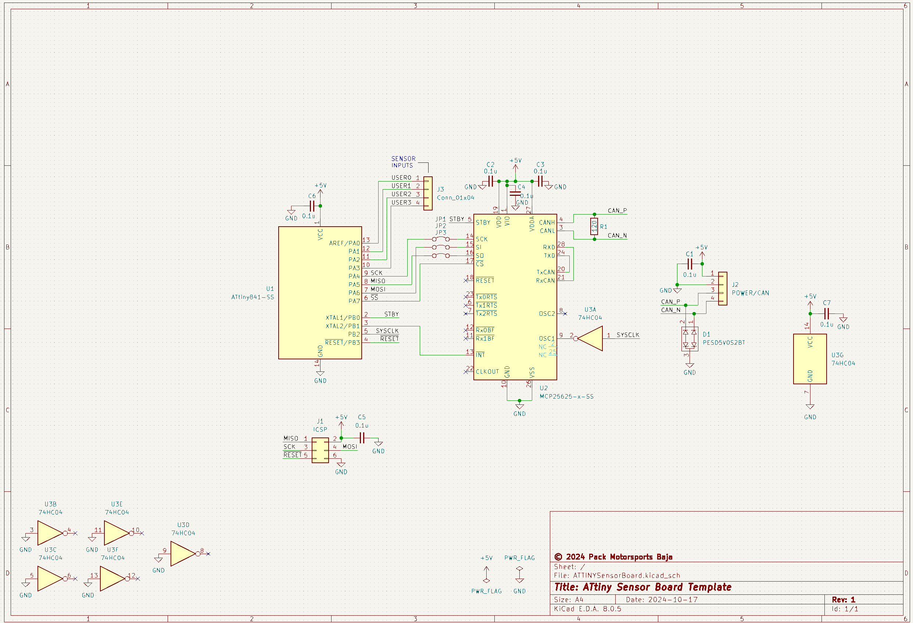
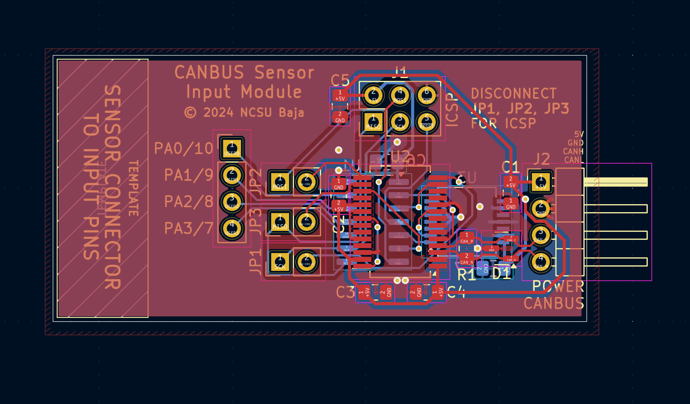
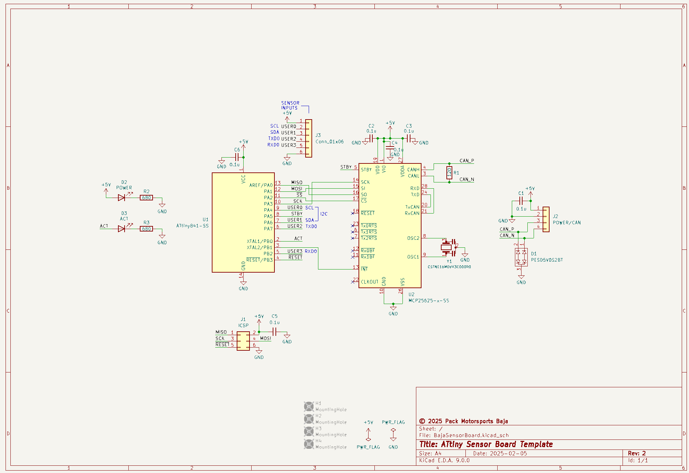
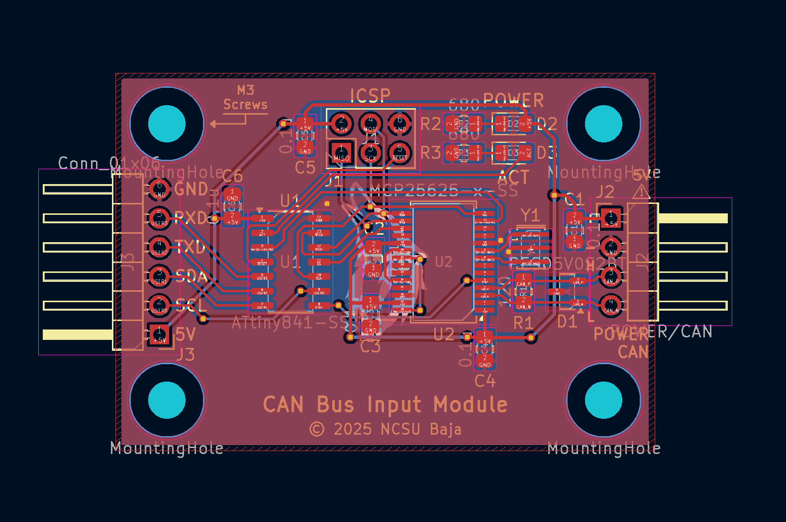

Project Overview:
This project involves designing and testing sensor boards for the NC State Baja SAE team. The goal is to monitor performance metrics such as RPM, acceleration, rotation, and force/strain. The boards are then mounted on the vehicle, and connected to sensors and the data logger, which is a Raspberry Pi.
The Arduino IDE was used for programming the boards, which can be made to support the ATtiny since it is an AVR microcontroller just like the ATmega328P used in Arduino boards, and so it is compatible with AVR-GCC.
Initial Board Design:
The intention of this first design was to create a template node board that can be slightly modified to capture a variety of different sensor inputs. The ATtiny and CAN circuitry would be identical between all the boards, and all that the future designer would need to do is to add the required sensor connector and input circuitry if necessary.
Unfortunately, this design did not work and we had to come up with a new, improved one. The main issue was that the internal system clock of the ATtiny841 was being used to drive the MCP25625, which requires an external clock source to operate. However, CAN communication requires precise bit timing, and the internal oscillator of the ATtiny841 turned out to be insufficiently accurate for reliable communication. Although we could observe CAN signals on the oscilloscope, the data could not be read by the data logger. We resolved this issue in the next iteration by incorporating a 16 MHz external crystal oscillator to drive the MCP25625.


Revision of the Initial Board Design:
This is the 2nd board design we made. In addition to the inclusion of an external crystal oscillator to drive the MCP25625 CAN transceiver, we decided to take a different approach with the sensor connectors. Instead of modifying the sensor boards themselves for each sensor input (e.g. the GPS board would have a different sensor connector than the ones for hall effect), we decided to expand the sensor connector pins so that it any of our sensors could be connected to it by using a different number or configuration of pins.


This project is still ongoing, and there are some fixes or improvements that will be made to the boards in the future.